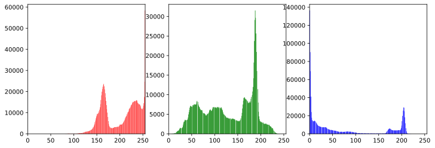
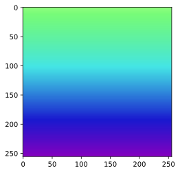
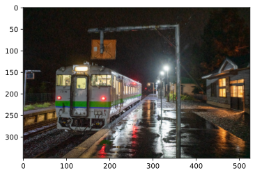
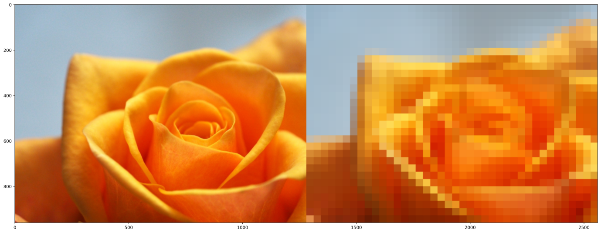
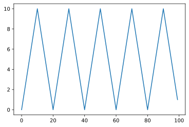

ブロードキャストの応用
動画は(F, H, W, C)という４次元のテンソル担っており，ブロードキャストが必須である.
1 reshape
1.1 ベクトルと行列のやり取り
1.2 テンソルと行列
Code
[[255 255 0]
[255 255 0]]Code
(1137, 871, 3)
(990327, 3)画像を行列にするとなにが嬉しいのか，ということについて，まずカラーヒストグラムが挙げられる.
Code

2 軸を追加する関数
上述したように軸を追加する方法には，reshape，expand_dimsがある。
reshapeの方がやりやすいようにも見えるが，ディープラーニングのような複雑なモデルを扱うときには，expand_dimsを使う. また，stackでも大丈夫である.
expand_dimsは指定した軸に新しいshapeが加わる.
3 ブロードキャスト
3.1 reshapeの計算コスト
reshapeの計算コストは軽いので暗黙のブロードキャストが行われないように， shapeを合わせておくことが望ましい。
Code
551 ns ± 22.6 ns per loop (mean ± std. dev. of 7 runs, 100000 loops each)
780 ns ± 8.39 ns per loop (mean ± std. dev. of 7 runs, 100000 loops each)
3.82 µs ± 47.2 ns per loop (mean ± std. dev. of 7 runs, 100000 loops each)3.2 アンチパターン
array([[[1., 2., 3.],
[1., 2., 3.],
[1., 2., 3.]],
[[1., 2., 3.],
[1., 2., 3.],
[1., 2., 3.]],
[[1., 2., 3.],
[1., 2., 3.],
[1., 2., 3.]]])4 ブロードキャストを自在に操る
4.1 九九
array([[ 1, 2, 3, 4, 5, 6, 7, 8, 9],
[ 2, 4, 6, 8, 10, 12, 14, 16, 18],
[ 3, 6, 9, 12, 15, 18, 21, 24, 27],
[ 4, 8, 12, 16, 20, 24, 28, 32, 36],
[ 5, 10, 15, 20, 25, 30, 35, 40, 45],
[ 6, 12, 18, 24, 30, 36, 42, 48, 54],
[ 7, 14, 21, 28, 35, 42, 49, 56, 63],
[ 8, 16, 24, 32, 40, 48, 56, 64, 72],
[ 9, 18, 27, 36, 45, 54, 63, 72, 81]])4.2 縦横のグラデーション
4.3 動画でのブロードキャスト
Code
frames = np.zeros((100, 256, 256, 3), dtype = np.uint8)
# フレーム方向にグラデーションを追加している
frames[..., 0] = \
np.linspace(255, 0, frames.shape[0], dtype = np.uint8).reshape(-1, 1, 1)
frames[..., ２] = \
np.linspace(0, 255, frames.shape[0], dtype = np.uint8).reshape(-1, 1, 1)
fig = plt.figure(figsize = (8, 8))
for i, f in enumerate([0, 30, 60, 99]):
ax = fig.add_subplot(2, 2, i + 1)
ax.imshow(frames[f])
ax.set_title("f =" + str(f))
plt.show()SyntaxError: invalid character in identifier (<ipython-input-19-5cab0d0a9f5e>, line 5)4.4
5 軸を増やすための書き方
Code
print("- reshape -")
%timeit -n 1000000 np.arange(100).reshape(1, 100)
%timeit -n 1000000 np.arange(100).reshape(100, 1)
print("- expand_dims -")
%timeit -n 1000000 np.expand_dims(np.arange(100),axis=0)
%timeit -n 1000000 np.expand_dims(np.arange(100),axis=-1)
print("- np.newaxis -")
%timeit -n 1000000 np.arange(100)[np.newaxis, :]
%timeit -n 1000000 np.arange(100)[:, np.newaxis]
print("- None -")
%timeit -n 1000000 np.arange(100)[None, :]
%timeit -n 1000000 np.arange(100)[:, None]- reshape -
811 ns ± 2.34 ns per loop (mean ± std. dev. of 7 runs, 1000000 loops each)
815 ns ± 1.65 ns per loop (mean ± std. dev. of 7 runs, 1000000 loops each)
- expand_dims -
3.86 µs ± 49.3 ns per loop (mean ± std. dev. of 7 runs, 1000000 loops each)
3.89 µs ± 54.2 ns per loop (mean ± std. dev. of 7 runs, 1000000 loops each)
- np.newaxis -
874 ns ± 20.3 ns per loop (mean ± std. dev. of 7 runs, 1000000 loops each)
864 ns ± 13.6 ns per loop (mean ± std. dev. of 7 runs, 1000000 loops each)
- None -
824 ns ± 1.54 ns per loop (mean ± std. dev. of 7 runs, 1000000 loops each)
837 ns ± 22.6 ns per loop (mean ± std. dev. of 7 runs, 1000000 loops each)上記を見ると，基本的にexpand_dimsはやや遅いが，繰り返し使うものでなければ，どれを使っても大差がないように思える.
6 手動ブロードキャスト
なにも考えずとりあずブロードキャストしてみる.
6.1 np.broadcast_to
array([[0, 0],
[1, 1],
[2, 2]])ブロードキャストした配列に対して，x[0,:]のような代入するとエラーになる。
つまりは，計算はできるが，代入はできない.
では，どうするかというと，copy, np.repeatヲ使う.
数値計算らしい方法としては，１を乗じるものもある.
array([[1, 1, 1],
[0, 1, 2]])速度的にはnp.repeatが早いのでこれを使うこと.
7 reshapeの黒魔術(1) ：モノクロ画像の切り出し
これはすごい！！！！！！
元の行列
[[ 0 1 2 3 4 5]
[ 6 7 8 9 10 11]
[12 13 14 15 16 17]
[18 19 20 21 22 23]
[24 25 26 27 28 29]
[30 31 32 33 34 35]]Code
切り出した行列
[[0 1]
[6 7]]
[[2 3]
[8 9]]
[[ 4 5]
[10 11]]
[[12 13]
[18 19]]
[[14 15]
[20 21]]
[[16 17]
[22 23]]
[[24 25]
[30 31]]
[[26 27]
[32 33]]
[[28 29]
[34 35]]やっていることは次の図を見れば明らか.

Code

Code
(12, 320, 320)8 reshapeの黒魔術：カラー画像の切り出し
Code
Code
(12, 320, 320, 3)9 reshapeの黒魔術カラー画像の切り出し
Code
(16, 240, 320, 3)10 Colabで動画を表示する方法
11 演習問題
11.1 Q3:九九
array([[ 1, 2, 3, 4, 5, 6, 7, 8, 9],
[ 2, 4, 6, 8, 10, 12, 14, 16, 18],
[ 3, 6, 9, 12, 15, 18, 21, 24, 27],
[ 4, 8, 12, 16, 20, 24, 28, 32, 36],
[ 5, 10, 15, 20, 25, 30, 35, 40, 45],
[ 6, 12, 18, 24, 30, 36, 42, 48, 54],
[ 7, 14, 21, 28, 35, 42, 49, 56, 63],
[ 8, 16, 24, 32, 40, 48, 56, 64, 72],
[ 9, 18, 27, 36, 45, 54, 63, 72, 81]])11.2 Q4：真理値表
論理関数もブロードキャストが適用されるようです.
array([[ True, False],
[False, False]])11.3 Q5：駅間距離
11.4 Q6：都市間の直線距離
Code
lonlat = np.array([
[43.06, 141.35],
[43.77, 142.37],
[45.40, 141.68],
[42.97, 144.38],
[43.33, 145.58],
[42.91, 143.18],
[42.34, 140.99],
[41.79, 140.74]
])
# 都市x都市x(lon, lat)
dmat = \
np.sqrt(
np.sum(
((lonlat[None, :, :] - lonlat[:, None, :]) * np.array([111, 82])[None, None, :]) ** 2,
axis = 2
)
)
np.round(dmat, 0)array([[ 0., 115., 261., 249., 348., 151., 85., 150.],
[115., 0., 190., 187., 268., 116., 195., 257.],
[261., 190., 0., 349., 394., 303., 344., 408.],
[249., 187., 349., 0., 106., 99., 287., 326.],
[348., 268., 394., 106., 0., 202., 392., 432.],
[151., 116., 303., 99., 202., 0., 190., 236.],
[ 85., 195., 344., 287., 392., 190., 0., 64.],
[150., 257., 408., 326., 432., 236., 64., 0.]])11.5 Q7：グラデーション
Code
img = np.full((256, 256, 3), 255, dtype = np.uint8)
img[..., 0] = np.linspace(80, 200, 256)[:, None].astype(np.uint8)
img[..., 1] = np.linspace(128, 255, 256)[:, None].astype(np.uint8)
img[..., 2] = np.linspace(255, 192, 256)[:, None].astype(np.uint8)
with Image.fromarray(img, "HSV") as img:
plt.imshow(img.convert("RGB"))

11.6 Q8：はじめまして動画
Code
frame = np.zeros((3, 255, 255, 3), dtype = np.uint8)
frame[0, ...] = np.array([128, 255, 255], dtype = np.uint8)[None, None, None, :]
frame[1, ...] = np.array([255, 128, 255], dtype = np.uint8)[None, None, None, :]
frame[2, ...] = np.array([255, 255, 128], dtype = np.uint8)[None, None, None, :]
video_utils.save_video("./dat/q08.mp4", frame, frame_rate = 1)11.7 Q9：グラデーション動画
Code
frames = np.zeros((100, 256, 256, 3), dtype = np.uint8)
frames[..., 0] = np.linspace(0, 255, 100, dtype = np.uint8)[:, None, None]
frames[..., 1] = np.linspace(255, 0, 100, dtype = np.uint8)[:, None, None]
frames[..., 2] = np.linspace(128, 255, 100, dtype = np.uint8)[:, None, None]
video_utils.save_video("./dat/q09.mp4", frames, frame_rate = 1)11.8 Q10：ルパン風タイトルジェネレーター
Code
font = ImageFont.truetype("numpy_book/fonts/M_PLUS_1p/MPLUS1p-Bold.ttf", 200)
with Image.new("RGB", (256, 256), color = (0, 0, 0)) as canvas:
draw = ImageDraw.Draw(canvas)
text_size = draw.textsize("あ", font = font)
ox, oy = (256 - text_size[0]) // 2, 0
draw.text((ox, oy), "あ", fill = (255, 255, 255), font = font)
plt.imshow(canvas) Code
frame_list = []
for s in list("こしあんは美味しい") + ["こしあんは\n美味しい"]:
with Image.new("RGB", (256, 256), color = (0, 0, 0)) as canvas:
draw = ImageDraw.Draw(canvas)
font_size = np.where(len(s) > 1, 40, 200)
font = ImageFont.truetype("numpy_book/fonts/M_PLUS_1p/MPLUS1p-Bold.ttf", font_size)
text_size = draw.textsize(s, font = font)
ox, oy = (256 - text_size[0]) // 2, (256 - text_size[1]) // 2
draw.text((ox, oy), s, fill = (255, 255, 255), font = font)
frame_list.append(np.array(canvas))
frame_list += [frame_list[-1]] * 11
frames = np.stack(frame_list, axis = 0)11.9 Q11：動くグラデーション
Code
frame_list = []
for i in range(100):
canvas = np.full((256, 256, 3), 255, dtype = np.uint8)
canvas[..., 0] = np.linspace(2 * i, 2 * (i + 100), 256)[:, None]
with Image.fromarray(canvas, "HSV") as img:
rgb = np.array(img.convert("RGB"))
frame_list.append(rgb)
frames = np.stack(frame_list, axis = 0)
video_utils.save_video("./dat/q11.mp4", frames)11.10 Q12：動くゲーミングあんこちゃん
Code
with Image.open("numpy_book/imgs/girl01.png") as img:
girl = np.array(img.convert("RGB"), dtype = np.float32) / 255.
H, W, _ = girl.shape
frame_list = []
for i in range(300):
Rhsv = np.full_like(girl, 255, dtype = np.uint8)
Rhsv[..., 0] = np.linspace(4 * i, 4 * i + 256, H, dtype = np.uint8)[:, None]
with Image.fromarray(Rhsv, "HSV") as img:
Rrgb = np.array(img.convert("RGB"), dtype = np.float32) / 255.
mixed_frame = overlay(girl, Rrgb)
frame_list.append((mixed_frame * 255).astype(np.uint8))
frames = np.stack(frame_list, axis = 0)
video_utils.save_video("./dat/q12.mp4", frames)11.11 Q13：動画のハードライトブレンディング
割としっかり時間が必要なのでツラ。
Code
with Image.open("numpy_book/imgs/flower01.jpg") as img:
B = np.array(img.convert("RGB"), dtype = np.float32) / 255.
Hb, Wb, _ = B.shape
print(Hb, Wb)
with Image.open("numpy_book/imgs/water2.jpg") as img:
R = np.tile(np.array(img.convert("RGB"), dtype = np.float32) / 255., (2, 2, 1))
Hr, Wr, _ = R.shape
print(Hr, Wr)
frame_list = []
dy, dx = Hb, Wb
for i in range(Hb):
oy, ox = (i, W // 2)
mixed = (hardlight(B, R[oy:oy + dy, ox:ox + dx]) * 255).astype(np.uint8)
frame_list.append(mixed)
frames = np.stack(frame_list, axis = 0)
video_utils.save_video("./dat/q13.mp4", frames)960 1280
1920 256011.12 Q14：ビビットライト・ブレンディング
Code
with Image.open("numpy_book/imgs/flower01.jpg") as img:
B = np.array(img.convert("RGB"), dtype = np.float32) / 255.
Hb, Wb, _ = B.shape
print(Hb, Wb)
with Image.open("numpy_book/imgs/water2.jpg") as img:
R = np.tile(np.array(img.convert("RGB"), dtype = np.float32) / 255., (2, 1, 1))
Hr, Wr, _ = R.shape
print(Hr, Wr)
frame_list = []
dy, dx = Hb, Wb
for i in range(Hb):
oy, ox = (i, 0)
mixed = (vividlight(B, R[oy:oy + dy, ox:ox + dx]) * 255).astype(np.uint8)
frame_list.append(mixed)
frames = np.stack(frame_list, axis = 0)
video_utils.save_video("./dat/q14.mp4", frames)960 1280
1920 128011.13 Q15：移動する円
Code
frame_list = []
idy, idx = np.indices((320, 480))
gb = np.full((320, 480, 2), 0, dtype = np.uint8)
for i in range(100):
ox, oy = (i * i) / 100, 160
mask = np.sqrt((idy - oy) ** 2 + (idx - ox) ** 2) <= 100
r = (mask * 255).astype(np.uint8)
rgb = np.concatenate([r[..., None], gb], axis = 2)
frame_list.append(rgb)
frames = np.stack(frame_list, axis = 0)
video_utils.save_video("./dat/q15.mp4", frames)11.14 Q16：ひかるまりも
Code
H, W = 320, 480
with Image.open("numpy_book/imgs/water2.jpg") as img:
water2_resized = img.resize((W, H), Image.NEAREST)
water2 = np.array(water2_resized)
with Image.open("numpy_book/imgs/moss.jpg") as img:
moss_resized = img.resize((W, H), Image.NEAREST)
moss = np.array(moss_resized)
idy, idx = np.indices((H, W))
oy, ox, r = 160, 240, 100
mask = np.sqrt((idy - oy) ** 2 + (idx - ox) ** 2) + np.random.randn(H, W) * 5 <= rCode
n_frames = 100
grad = np.full((n_frames, H, W, 3), 255, dtype = np.uint8)
grad[...,0] = np.linspace(4, 32, n_frames, dtype = np.uint8)[:, None, None]
grad[...,1] = np.linspace(149, 209, n_frames, dtype = np.uint8)[:, None, None]
grad[...,2] = np.linspace( 80, 1, n_frames, dtype = np.uint8)[:, None, None]
grad = (.5 * np.sin(6 * np.arange(n_frames) * np.pi / 180) + .5)[:, None, None, None] * grad
moss = moss / 255.
grad = grad / 255.
for i in np.arange(n_frames):
grad[i, ...] = np.clip(1 - (1 - moss) / (1e-8 + grad[i, ...]), 0, 1)11.15 Q17：ダイナミックな行列のスライス
np.indicesのインデックスそのものを使いスライスを行う.
array([[0, 1, 2],
[3, 4, 5],
[6, 7, 8]])Code
array([[ 0, 2, 4, 6, 8, 1, 3, 5, 7, 9],
[10, 12, 14, 16, 18, 11, 13, 15, 17, 19],
[20, 22, 24, 26, 28, 21, 23, 25, 27, 29],
[30, 32, 34, 36, 38, 31, 33, 35, 37, 39],
[40, 42, 44, 46, 48, 41, 43, 45, 47, 49],
[50, 52, 54, 56, 58, 51, 53, 55, 57, 59],
[60, 62, 64, 66, 68, 61, 63, 65, 67, 69],
[70, 72, 74, 76, 78, 71, 73, 75, 77, 79],
[80, 82, 84, 86, 88, 81, 83, 85, 87, 89],
[90, 92, 94, 96, 98, 91, 93, 95, 97, 99]])11.16 Q18：ダイナミックなスライスとブロードキャスト
Code
array([[[0, 1, 2],
[0, 1, 2],
[3, 4, 5]],
[[0, 1, 2],
[3, 4, 5],
[6, 7, 8]],
[[3, 4, 5],
[6, 7, 8],
[6, 7, 8]]])11.17 Q19：座標にノイズを乗せたエフェクト
各ピクセルの座標にノイズを乗せて，そのノイズ幅をだんだん小さくしていくことで フェードインエフェクトを得たい。
Code
with Image.open("numpy_book/imgs/pic02.jpg") as img:
pic = np.array(img)
H, W, _ = pic.shape
idy, idx = np.indices((H, W))
n_frame = 100
k = np.linspace(10, 0, n_frame) ** 2
noize = np.random.randn(H, W)
idx_r = np.clip(idx[None, ...] + k[:, None, None] * noize[None, ...], 0, W-1).astype(int)
idy_r = np.clip(idy[None, ...] + k[:, None, None] * noize[None, ...], 0, H-1).astype(int)11.18 Q20：座標にノイズを乗せたエフェクト
Code
with Image.open("numpy_book/imgs/pic02.jpg") as img:
pic = np.array(img)
H, W, _ = pic.shape
idy, idx = np.indices((H, W))
n_frame = 100
k = np.linspace(10, 0, n_frame) ** 2
x_noize = np.random.randn(n_frame, *idx.shape)
y_noize = np.random.randn(n_frame, *idy.shape)
idx_r = np.clip(idx[None, ...] + k[:, None, None] * x_noize, 0, W-1).astype(int)
idy_r = np.clip(idy[None, ...] + k[:, None, None] * y_noize, 0, H-1).astype(int)
frames = pic[idy_r, idx_r]
video_utils.save_video("./dat/q20.mp4", frames)11.19 Q21：三角関数を載せた絵ジェクト
Code
with Image.open("numpy_book/imgs/pic02.jpg") as img:
pic = np.array(img)
H, W, _ = pic.shape
idy, idx = np.indices((H, W))
n_frame = 100
k = np.linspace(15, 0, n_frame, dtype = np.float32) ** 2
x_noize = np.cos(idy / H * 2 * np.pi * 8).astype(np.float32)
y_noize = np.sin(idx / W * 2 * np.pi * 5).astype(np.float32)
idx_r = np.clip(idx[None, ...] + k[:, None, None] * x_noize[None, ...], 0, W-1).astype(int)
idy_r = np.clip(idy[None, ...] + k[:, None, None] * y_noize[None, ...], 0, H-1).astype(int)
frames = pic[idy_r, idx_r]
video_utils.save_video("./dat/q21.mp4", frames)11.20 Q21：三角関数を載せたエフェクト
Code
with Image.open("numpy_book/imgs/pic02.jpg") as img:
pic = np.array(img)
H, W, _ = pic.shape
idy, idx = np.indices((H, W))
n_frame = 100
k = np.linspace(3, 1, n_frame, dtype = np.float32) ** 2
x_noize = np.cos(idy / H * 2 * np.pi * 8).astype(np.float32)
y_noize = np.sin(idx / W * 2 * np.pi * 5).astype(np.float32)
idx_r = np.clip(idx[None, ...] + k[:, None, None] * x_noize[None, ...], 0, W-1).astype(int)
idy_r = np.clip(idy[None, ...] + k[:, None, None] * y_noize[None, ...], 0, H-1).astype(int)
frames = pic[idy_r, idx_r]
video_utils.save_video("./dat/q22.mp4", frames)11.21 Q23：スライドしながら覆い焼く
Code
350 525Code
slide_per_frame = 3
n_round = 2
rect_sub_width = 100
black_front = np.zeros((H, W, 3), dtype = np.float32)
frame_list = []
orange = np.array([.8, .5, .3])[None, None, :]
for i in range(0, n_round * W, slide_per_frame):
black_front[...] = 0
using_idx = np.arange(i, i + rect_sub_width) % W
black_front[:, using_idx, :] = orange
out = np.clip(.3 * back / (1 - black_front + 1e-8), 0, 1)
out = (255 * out).astype(np.uint8)
frame_list.append(out)11.22 Q24：トーンカーブとアニメーション
Code
350 52511.23 Q25：動くスポットライトのアニメ
スプライン補間を使うと，動くスポットライトのアニメーションが再現ｄけいる. 楕円形の白マスクを作成し，フレームに応じて位置を移動させて，スクリーンで合成する.
Code
with Image.open("numpy_book/imgs/pic02.jpg") as img:
img = img.resize((img.width //2, img.height // 2), Image.NEAREST)
back = np.array(img) / 255.
H, W, _ = back.shape
plt.imshow(back)
n_frame = 210
key_frame = np.arange(8) * 30
kf_spot_y_center = np.array([0.8*H, 0.8*H, 0.2*H,0.2*H, 0.5*H, 0.5*H, 0.6*H, 0.6*H])
kf_spot_x_center = np.array([0.2*W, 0.2*W, 0.3*W,0.3*W, 0.8*W, 0.8*W, 0.5*W, 0.5*W])
f_interp_y = interp1d(np.linspace(0, n_frame, 8), kf_spot_y_center, kind = "quadratic")
f_interp_x = interp1d(np.linspace(0, n_frame, 8), kf_spot_x_center, kind = "quadratic")
idy, idx = np.indices((H, W))
frame_list = []
for i in range(n_frame):
oy, ox = f_interp_y(i), f_interp_x(i)
d = np.sqrt(((idy - oy) / 80) ** 2 + ((idx - ox) / 150) ** 2)
v = np.clip(1 - d, 0, 1)
light = np.tile(v[..., None], (1, 1, 3))
out = 1 - (1 - back) * (1 - light)
out = (np.clip(out, 0, 1) * 255).astype(np.uint8)
frame_list.append(out)

11.24 Q26：懐かしいのスクリーンセ-バー
Code
with Image.open("numpy_book/imgs/girl01.png") as img:
img = img.convert("RGB")
back = np.array(img) / 255.
H, W, _ = back.shape
plt.imshow(back)
n_frame = 210
key_frame = np.arange(8) * 30
kf_spot_y_center = np.array([0.8*H, 0.2*H, 0.5*H,0.6*H, 0.9*H, 0.1*H, 0.8*H, 0.5*H])
kf_spot_x_center = np.array([0.2*W, 0.3*W, 0.8*W,0.5*W, 0.4*W, 0.8*W, 0.9*W, 0.5*W])
f_interp_y = interp1d(np.linspace(0, n_frame, 8), kf_spot_y_center, kind = "quadratic")
f_interp_x = interp1d(np.linspace(0, n_frame, 8), kf_spot_x_center, kind = "quadratic")
idy, idx = np.indices((H, W))
R = 150
frame_list = []
for i in range(n_frame):
oy, ox = f_interp_y(i), f_interp_x(i)
y, x = (idy - oy), (idx - ox)
r = np.sqrt(y ** 2 + x ** 2)
theta = np.arctan2(y, x)
theta_d = np.clip((R - r) * np.pi * 2 / R, 0, np.pi * 2)
theta_norm = theta + theta_d
x = np.clip(r * np.cos(theta_norm) + ox, 0, W-1).astype(int)
y = np.clip(r * np.sin(theta_norm) + oy, 0, H-1).astype(int)
uzu = back[y, x]
mask = r > R
o = mask[..., None] * back + (1-mask[..., None]) * uzu
frame_list.append((255 * o).astype(np.uint8))
11.25 Q27：微分可能なモザイク
PILのリサイズを使わずに, reshapeだけでモザイクを描けることが可能となる.
Code
<matplotlib.image.AxesImage at 0x22cdd23e6d8>
11.25.1 Q28：スライドするライト
Code
with Image.open("numpy_book/imgs/pic02.jpg") as img:
img = img.convert("RGB")
x = np.array(img, dtype = np.uint16)
H, W, _ = x.shape
S = 175
x_r = x.reshape(1, H // S, S, W // S, S, 3)
x_r = x_r.transpose(0, 1, 3, 2, 4, 5)
x_r = x_r.reshape(1, -1, S, S, 3)
n_frame = int(H * W / S / S)
# フレームに1枚ずつあてがうために，単位行列を採用している
light = (128 * np.eye(n_frame)).reshape(n_frame, n_frame, 1, 1, 1)
frames = np.clip(x_r + light, 0, 255).astype(np.uint8)array([[[1.],
[0.],
[0.],
[0.]],
[[0.],
[1.],
[0.],
[0.]],
[[0.],
[0.],
[1.],
[0.]],
[[0.],
[0.],
[0.],
[1.]]])11.26 Q29：跳ね返るボール
ボールが行って戻るまでの範囲を繰り返すようにしている.
軸ごとに繰り返しで表現できるようにすることがポイント.
例えばxが1, 2, 3, 4, 5, 6，．．．となっていたときに３で折り返すようにすれば, 1, 2, 3, 2, 1, 2, …という風になる.
Code

Code
frame_list = []
for i in range(F):
y_pos = np.minimum(2 * (H-R) - i * v_y % (2 * (H-R)), i * v_y % (2 * (H-R))) + R
x_pos = np.minimum(2 * (H-R) - i * v_x % (2 * (H-R)), i * v_x % (2 * (H-R))) + R
mask = np.sqrt((idy-y_pos) ** 2 + (idx-x_pos) ** 2) <= R
out = mask[..., None] * red[None, None, :] + (1-mask[..., None]) * canvas
frame_list.append(out.astype(np.uint8))11.27 Q30：跳ね返る複数のボール
Code
frame_list = []
s_y, s_x = speed_ratio
canvas = np.full((M, H, W, 3), 0, dtype = np.uint8)
for i in range(F):
y_pos = np.min(np.stack([2 * (H-R) - i * s_y % (2 * (H-R)), i * s_y % (2 * (H-R))], axis = 1), axis = 1)
y_pos += R
x_pos = np.min(np.stack([2 * (H-R) - i * s_x % (2 * (H-R)), i * s_x % (2 * (H-R))], axis = 1), axis = 1)
x_pos += R
mask = np.sqrt((idy[None, ...] - y_pos[:, None, None])**2 + (idx[None, ...] - x_pos[:, None, None]) ** 2) <= R
out = mask[..., None] * ball_colors[:, None, None, :] + (1 - mask[..., None]) * canvas
out = np.clip(np.sum(out, axis = 0), 0, 255).astype(np.uint8)
frame_list.append(out)
11.28 Q31：粉雪
Code
frame_canvas = np.full((n_frames, H, W, 3), 0, dtype = np.uint8)
for i in range(n_frames):
speed = np.random.uniform(1, 7, M)
theta = np.random.uniform(0, np.pi * 2, M)
dyx = np.stack([speed * np.sin(theta), speed * np.cos(theta)], axis = 1)
points_pos += dyx.astype(np.uint8)
points_pos[:, 0] = np.clip(points_pos[:, 0], 0, H-1)
points_pos[:, 1] = np.clip(points_pos[:, 1], 0, W-1)
frame_canvas[i, points_pos[:, 0], points_pos[:, 1], :] = white[None, None, :]
frame_canvas = frame_canvas[:, 1:H-1, 1:W-1, :]